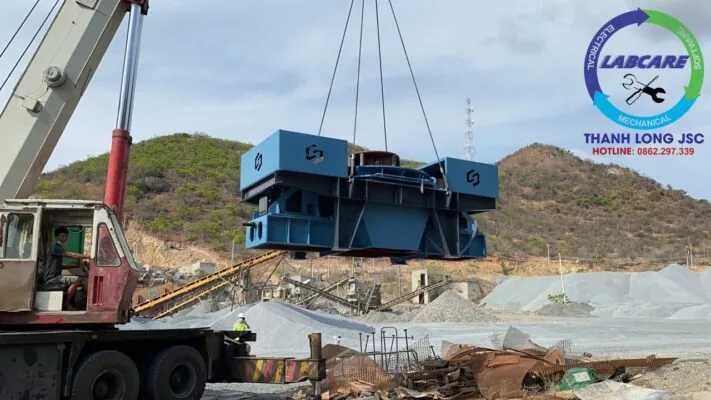

Trữ lượng cát tự nhiên ngày càng khan hiếm đang là vấn để được chủ đầu tư phải để tâm rất nhiều. Cát chiếm vai trò rất quan trọng trong cuộc sống, đặc biệt ở nền công nghiệp hóa, hiện đại hóa, nền xây dựng đang được đề cao, điểm nhấn cho các quốc gia phát triển. Để cải thiện cũng như đáp ứng được nguồn cát thiếu hụt, cát nhân tạo ngày càng được quan tâm. Tùy thuộc vào kinh tế và chủ trương, chủ đầu tư chọn cho mình mức giá máy nghiền cát nhân tạo. Mỗi nhà sản xuất đều có ưu nhược và giá máy nghiền cát khác nhau. Vậy với thông tin dưới đây hy vọng sẽ giúp chủ đầu tư có cái nhìn tổng thể hơn cho quá trình đầu tư.
Báo giá máy nghiền cát nhân tạo
Máy nghiền cát nhân tạo hiện nay đang là sản phẩm máy nghiền công nghiệp được quan tâm nhất hiện nay. Phục vụ trong quá trình sản xuất VLXD, nâng cao chất lượng sản phẩm cuối cùng. Việc đầu tư máy nghiền cát nhân tạo thường được các chủ đầu tư các mỏ đá xây dựng quan tâm.
Nguồn nguyên liệu có sẵn cho máy nghiền cát thường đến từ các sỏi sông, đồi, đá cát kết hay đá mi sàng, …
Máy nghiền cát nhân tạo còn có thể được các đơn vị chuyên sản xuất VLXD như bê tông tươi, gạch không nung. Đầu tư với mong muốn đem lại nguồn nguyên liệu đảm bảo được các yêu cầu khó tính cho sản phẩm đầu ra trên thị trường VLXD.
Máy nghiền cát nhân tạo hiện nay có rất nhiều model khác nhau. Tùy thuộc vào từng nhà sản xuất cũng như công nghệ nghiền được ứng dụng.
Lựa chọn máy nghiền cát nhân tạo và giá cả phù hợp
Về nhà sản xuất máy nghiền cát nhân tạo hiện nay có rất nhiều các nhà sản xuất đến từ Châu Âu, Hàn, Trung Quốc,… Mỗi hãng có những ưu nhược điểm khác nhau. Tùy thuộc vào nhu cầu và khả năng của chủ đầu tư.
Được đánh giá là nhà sản xuất có kinh nghiệm lâu năm trong ngành công nghiệp máy nghiền cát nhân tạo. Máy nghiền cát nhân tạo thường được lắp đặt trong giai đoạn cuối của dây chuyền máy nghiền đá hoặc sỏi sông, đá cát kết để tạo ra dải hạt từ 0-40 (tùy theo kích thước lỗ sàng) hoặc tạo ra đá 1×2 với hình thù đẹp, đáp ứng các TCVN về cát nghiền hoặc đá cấp phối. Đó là các tiêu chuẩn như: TCVN 9205 : 2012, TCVN 7570: 2006 và tất cả các TCVN khác.
Công ty THANH LONG JSC chuyên cung cấp dây chuyền máy nghiền đá, máy nghiền cát nhân tạo, máy rửa cát, máy tách cát mịn, máy nghiền côn, kẹp hàm, băng tải, sàng rung, máy nghiền cát nhân tạo VSI, vật tư trạm nghiền với giá tốt nhất.
Nhấn vào đây để lấy Bảng báo giá tự động máy nghiền cát nhân tạo từ Thanh Long JSC Hoặc liên hệ Hotline: 0912.712.772

Bảng so sánh công nghệ máy nghiền cát nhân tạo với các công nghệ máy nghiền cát khác
|
TIÊU CHÍ |
BẢNG SO SÁNH MÁY LÀM CÁT NHÂN TẠO |
|
Nguyên lí hoạt động |
Máy nghiền cát có công suất (100-280TH) | Máy nghiền cát Khác công suất 100-280TH |
| Hoạt động theo nguyên lý đá va đá Tốc độ rotor được điều khiển tự động có thể thay đổi được ( từ 50-85m/s )-> có thể điều chỉnh tỷ lệ cát đầu ra đến 50%-70% tuỳ loại đá. . . | Hoạt động theo nguyên lý đá va đe kim loại Tốc độ rotor hầu như không thay đổi được. Tỉ lệ cát ra phụ thuộc nhiều vào kết cấu cơ khí; | |
| Điều chỉnh kiểu cho ăn theo tầng/lớp -> giúp tăng tỷ lệ đá vo phục vụ cho trạm trộn betong, đường cao tốc nếu cần thiết | Chỉ có 1 cách cho ăn trực tiếp thông qua rotor | |
Kết cấu cơ khí |
Thân máy được đúc tại xưởng đúc riêng, với sự giám sát chất lượng nghiêm ngặt. Thép được nhập từ châu âu với chất lượng cao | Thân máy được đúc tại xưởng của bên thứ 3. Đa phần thép xuất xứ từ Trung Quốc với hàm lượng tạp chất cao. |
| Kết cấu nhỏ gọn. 1870x2575x2189mm, 6,371kg. Giúp việc vận chuyển và lắp đặt dễ dàng, tiết kiệm chi phí | Kết cấu cơ khí to và rườm rà, tốn diện tích và gia công bệ đỡ 4560x2450x2780mm, 14,500kg | |
| Hệ thống nâng hạ, điều chỉnh cửa cấp liệu bằng thuỷ lực. Giúp tối ưu hoá hiệu suất nghiền và điều chỉnh được tỷ lệ đầu ra sản phẩm | Hệ thống nâng hạ bằng tay, hầu như không điều chỉnh được tỷ lệ đầu ra sản phẩm | |
| Tốc độ rotor từ 1500-2500 vòng/phút tỷ lệ cát cao hơn khi vòng quay rotor lớn. | Tốc độ rotor 900-1300 vòng/phút. Một số đơn vị có thể lên tới 1500v/phút, tuy nhiên bạc đạn , vòng bi rất hay hỏng. | |
| Thân máy được đúc tại xưởng đúc riêng, với sự giám sát chất lượng nghiêm ngặt. Thép được nhập từ châu âu với chất lượng cao | Thân máy được đúc tại xưởng của bên thứ 3. Đa phần thép xuất xứ từ Trung Quốc với hàm lượng tạp chất cao. | |
Hệ thống giám sát cảnh báo an toàn cho thiết bị |
Hệ thống giám sát và cảnh báo an toàn : độ rung, nhiệt độ vòng bi, trục rotor, nhiệt độ động cơ giúp tăng tuổi thọ máy. | Không có |
| Hệ thống điều khiển hoàn toàn tự động IC giúp tối ưu hiệu suât đầu ra, đồng thời tối thiểu điện năng tiêu thụ => Không phụ thuộc vào trình độ và kinh nghiệm của người vận hành | Không có, công suất đầu ra và điện năng tiêu thụ phụ thuộc rất nhiều vào người vận hành chỉnh máy | |
Vật tư têu hao dao cát |
Nguyên lý đá và đá và đá va vào đệm cát trong các hộc trên thân, giúp tiết kiệm được vật tư tiêu hao. ( tuổi thọ trung bình của dao cát mà 35,000-40,000m3/ bộ dao ) | Tiêu tốn vật tư dao và đe – 15,000-20,000m3/ bộ khi dùng cho đá granite. |
Điện năng tiêu thụ |
Sử dụng động cơ 110kW-150KW=> tiết kiệm điện năng tiêu thụ hàng năm Với sự cố nhỏ, hệ thống thủy lực tự nâng hạ và cảnh báo, sửa chữa rất chóng | Sử dụng 2 động cơ 132kW = 264kW hoặc 320kW |
Vật tư thay thế |
Khi cần đến vật tư tiêu hao thì có Kho hàng ở Bà Rịa Vũng Tàu/Đồng Nai, Bình Phước, thời gian 1 ngày | Phải đặt hàng từ Trung Quốc hoặc chế tạo phi tiêu chuẩn, sai số rất lớn,mau hư |
Dụng cụ và thiết bị bảo trì |
Bộ dụng cụ tiêu chuẩn + thiết bị cân bằng động của rotor. Giúp người vận hành kiểm tra và cân bằng động cho rôtor, giúp tăng tuổi thọ vòng bi. | Bộ dụng cụ tiêu chuẩn. hoặc không có kèm theo |
Sách hướng dẫn vận hành |
Sách hướng dẫn vận hành, sổ tay vật tư tiêu hao.Bản vẽ đấu nối và bảo trì máy rất chi tiết, cụ thể | Không có/ có nhưng rất sơ sài hoặc bằng tiếng Tàu không sử dụng được |
Kỹ sư hỗ trợ lắp đặt, sự cố bảo hành |
Đội kỹ sư và chuyên gia, sẵn sàng hỗ trợ khách hàng 24/24, lắp đặt, vận hành, bảo trì, khắc phục sự cố | Không có/ có nhưng không nắm được kỹ thuật. Chờ kỹ sư từ nước ngoài bay sang hỗ trợ khi xảy ra sự cố |
Xuất xứ hàng hóa |
Châu Âu – 125 năm kinh nghiệm về máy nghiền cát | Hàng Trung Quốc/ Nhật nghĩa địa,copy công nghệ |